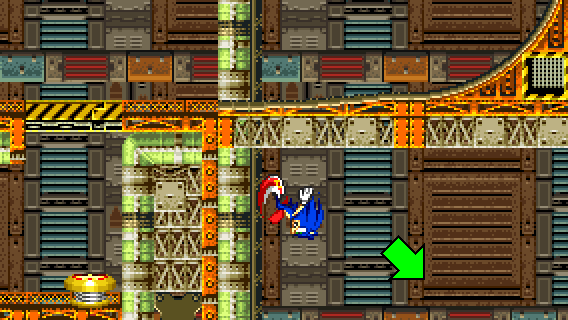

Location: Secret Base Zone Act 2
Difficulty: Very easy
STEP 1:
When using the trampoline after the 2 bouncing platforms, there are 2 paths you can take. It's simpler to go to the left and take the warp pipe.
Otherwise, you can jump up on moving platforms.
STEP 2:
Then, after traversing the second loop, move to the right when in the air. If you have landed on the platform with the ? Ring item box, follow the rings by jumping.
Hey! Here's the Special Spring!

STEP 3:
If you are fast enough, you can jump off the wall when running down just below the loop and land to the right.
Be careful not to move too fast! Otherwise, you might take the zipline and you won't be able to go back!
STEP 4:
Finally, all you have to do is to jump on the yellow spring and jump up on the bouncing platforms.
And voila! You found the Special Spring location!
RECOVERY 1:
If you fell off during STEP 1 or STEP 2, you can either try to go back up, or you can take the path below.
If you take the path below, make sure to take the horizontal rope and reach the path above.
RECOVERY 2:
After descending off the wall or after jumping on the yellow/black platform from below, you need to go to the right above, either by taking momentum from a Spin Dash, by flying or climbing.